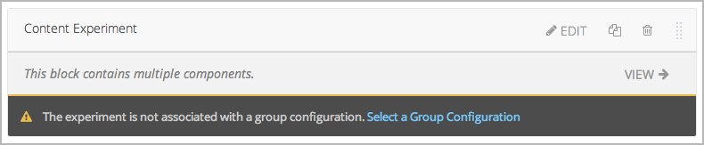

7.3. 为您的课程添加内容实验¶
在您 enable content experiments 以及 set up group configurations in Studio 之后，您可以为您的课程添加内容实验，请参阅：
7.3.1. 在Studio添加内容实验¶
您可以在单元页面或容器页面中添加内容实验。 在Studio中，您可以创建并查看某个容器页面中所有学习组的实验内容。 请参阅 `Create Content for Groups in the Content Experiment`_ 。
当学生查看带有内容实验的课程单元时，不会察觉到正在进行的内容实验。 她看不见实验名称，只能看见您给他所在的实验小组分配的内容。 对于学生而言，带有内容实验的课程单元与其他课程单元无异。
在Studio中配置内容实验，您需要：
成功创建内容实验后，您可以更改分组模式。 详情请参阅 `Change the Group Configuration for a Content Experiment`_ 。
7.3.1.1. 创建内容实验¶
您需要在单元页面中的 添加新组件 目录下点击 高级 。
选择 内容实验 。
新的内容实验已经添加到此单元中：
对该模块的操作与其他课程模块无异。详情请参考 创建课程组件 页面。
单击 选择分组模式 或 编辑 均可打开内容实验模块。

在 分组模式 旁边的的下拉选项中，选择一个分组模式。
在 显示名 字段下，键入本模块在Studio中显示的名称。该名称只在Studio中可见，对学生端不可见。
单击 保存 。
{kind=link}
内容实验显示为一个大模块，其中包含了许多其他小模块。更多信息请参见 组件嵌套 章节中的内容。
Note
内容实验模块无法复制。
现在，您可以为实验小组添加实验内容了。
7.3.1.2. 为实验小组添加实验内容¶
在内容实验模块中选择一个分组模式，单击 查看 。
自动弹出的内容实验页面包含了一个容器页面，该页面下又涵盖了您选择的分组模式以及该模式中的所有实验组。 例如，您选择的分组模式包含A组和B组，则您会看见如下页面：

您可以给这两个小组选择添加实验内容，具体操作方法与其他容器页面相同。 更多信息请参见 组件嵌套 章节中的内容。
例如，您可以给A组添加一个HTML模块或视频模块：

Note
有时候，预留一个没有内容的空组对于实验来说非常有用。 比如，如果一个小组正在看视频，另一个小组没有内容，您就可以根据学生表现来分析视频的效果。
7.3.1.3. 为实现内容实验更改分组模式¶
您可以根据某个内容实验的需求更改分组模式。当分组模式更改后，您需要给新创建的小组添加模块或组件。 您可以沿用原来的模块，也可以创建新模块。
Warning
如果某个实验对学生可见，更改该实验的分组模式会影响实验数据。
如何改变分组模式：
打开该内容实验的单元页面。
在内容实验模块中，单击 编辑 。
选择您需要的分组模式。
单击 保存 。
现在您需要为新创建的实验组添加模块或组件。单击 查看 打开内容实验页面。
您会发现，新创建的分组模式下空空如也，您在之前的分组模式中添加的模块和组件都被转移到了 非活动组 区域中。
您可以将 非活动组 中的内容拖拽到新分组中，也可以在新分组中创建新的内容。
7.3.2. Add a Content Experiment in OLX¶
You work with multiple XML files to configure a content experiment. This section steps through the files involved in a content experiment that shows different content to two different groups of students.
7.3.2.1. Define the Content Experiment in the Sequential File¶
You reference a content experiment in the file for the subsection, or
sequential, in the sequential directory. For example:
...
<vertical url_name="name for the unit that contains the A/B test" display_name="A/B Test Unit">
<split_test url_name="name of A/B test file in the split_test folder"/>
</vertical>
.....
The <split_test> element’s url_name value references the name of the
content experiment file in the split_test directory.
Caution
You can only define a content experiment in a unit, or vertical, in which different collections of components are associated with different experiment groups. You cannot define a content experiment at a subsection (sequential) or section (chapter) level and have different units or subsections associated with different groups.
7.3.2.2. Define the Experiment Content in the Split Test File¶
After you define the content experiment in the sequential file, you define the
course content you want to test in the file in the split_test directory.
This is the file referenced in the <split_test> element in the sequential
file, as shown above.
In the content experiment file, you add elements for the experiment content.
For this example, you add two <vertical> elements to compare the two
different sets of content.
<split_test url_name="AB_Test.xml" display_name="A/B Test" user_partition_id="0"
group_id_to_child='{"0": "i4x://path-to-course/vertical/group_a",
"1": "i4x://path-to-course/vertical/group_b"}'>
<vertical url_name="group_a" display_name="Group A">
<html>Welcome to group A.</html>
<video url_name="group_a_video"/>
</vertical>
<vertical url_name="group_b" display_name="Group B">
<html>Welcome to group B.</html>
<problem display_name="Checkboxes">
<p>A checkboxes problem presents checkbox buttons for student input.
Students can select more than one option presented.</p>
<choiceresponse>
<checkboxgroup direction="vertical" label="Select the answer that matches">
<choice correct="true">correct</choice>
<choice correct="false">incorrect</choice>
<choice correct="true">correct</choice>
</checkboxgroup>
</choiceresponse>
</problem>
</vertical>
</split_test>
In this example:
The
user_partition_idvalue references the ID of the experiment defined in thepolicy.jsonfile.The
group_id_to_childvalue references the IDs of the groups defined in thepolicy.jsonfile and maps the group IDs to specific content.For example, the value for group
0,i4x://path-to- course/vertical/group_a, maps to the<vertical>element with theurl_nameequal togroup_a. Therefore, students in group 0 see the content in that vertical.
For information about the policy.json file, see Set Up Group Configuration for OLX Courses.